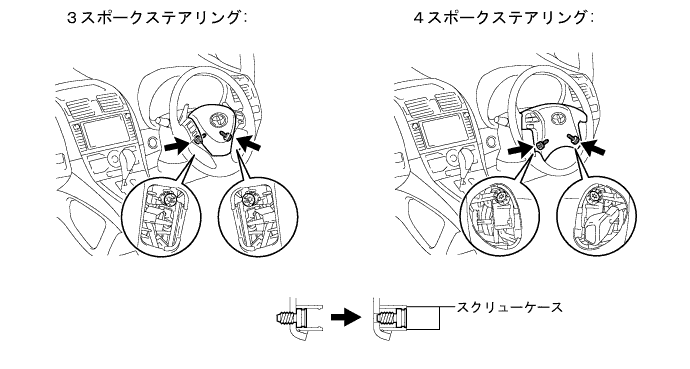
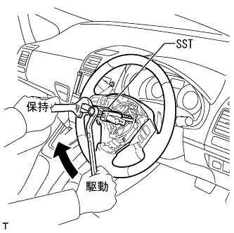

Shift Lever Assembly (U660E) Removal |
| 1. Handling and Work Precautions |
)| 2. Check Front Wheels Straight-ahead Position |
| 3. Disconnect Battery Negative Terminal |
)| 4. Remove Steering Wheel Cover Lower NO.2 |
 |
Disengage the claws and remove steering wheel cover lower NO.2.
| 5. Remove Steering Wheel Cover Lower NO.3 |
 |
Disengage the claws and remove steering wheel cover lower NO.3.
| 6. Remove Horn Button Assembly |
Using a torx socket wrench (T30), loosen the 2 torx bolts until they turn freely.

Using needle-nose pliers, pull out the 2 torx bolts.
 |
Pull the horn button assembly toward the rear of the vehicle.
 |
Using a thin-bladed screwdriver with its tip wrapped with protective tape, release the lock of the airbag connector.
Disconnect the airbag connector and horn connector, and remove the horn button assembly.
| 7. Remove Steering Wheel Assembly |
Operate the tilt and telescopic mechanisms and fix the steering column assembly in its most extended and highest position.
 |
Remove the nut and put matchmarks on the steering wheel assembly and steering column assembly.
 |
Using SST, remove the steering wheel assembly.
| 8. Remove Transmission Shift Switch |
 |
Detach the connector clamp from the steering wheel assembly and disconnect the switch wire connector.
 |
Disconnect the connectors from the 2 transmission shift switches and remove the switch wire.
 |
Remove the 4 screws, and remove the 2 brackets and 2 transmission shift switches.